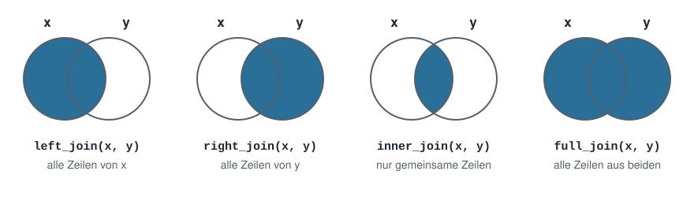
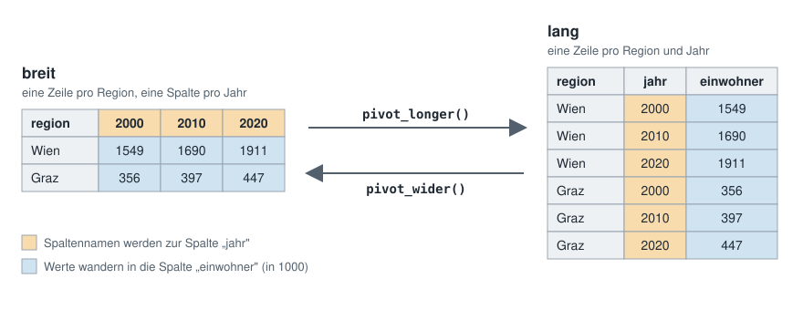
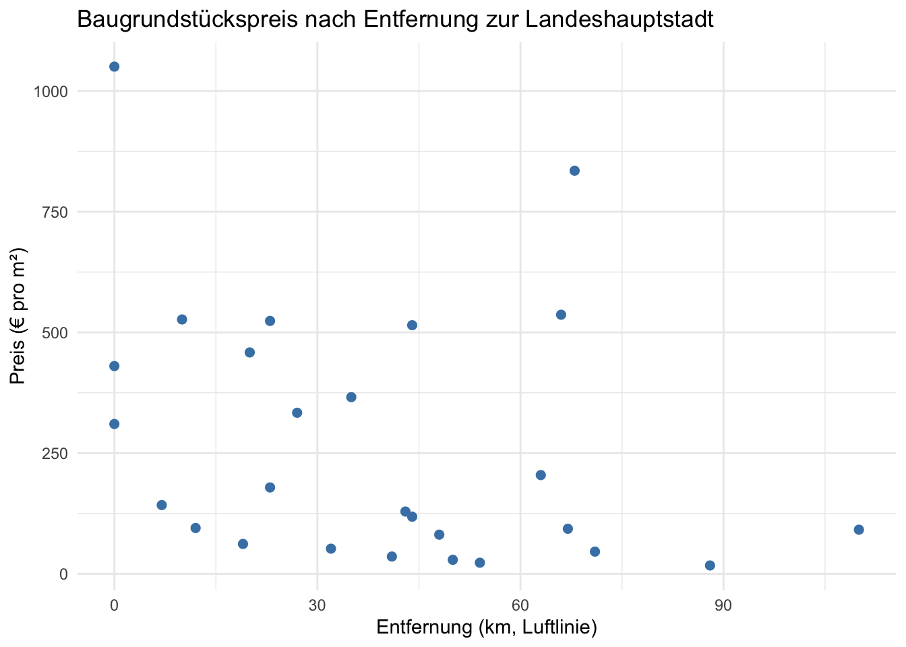
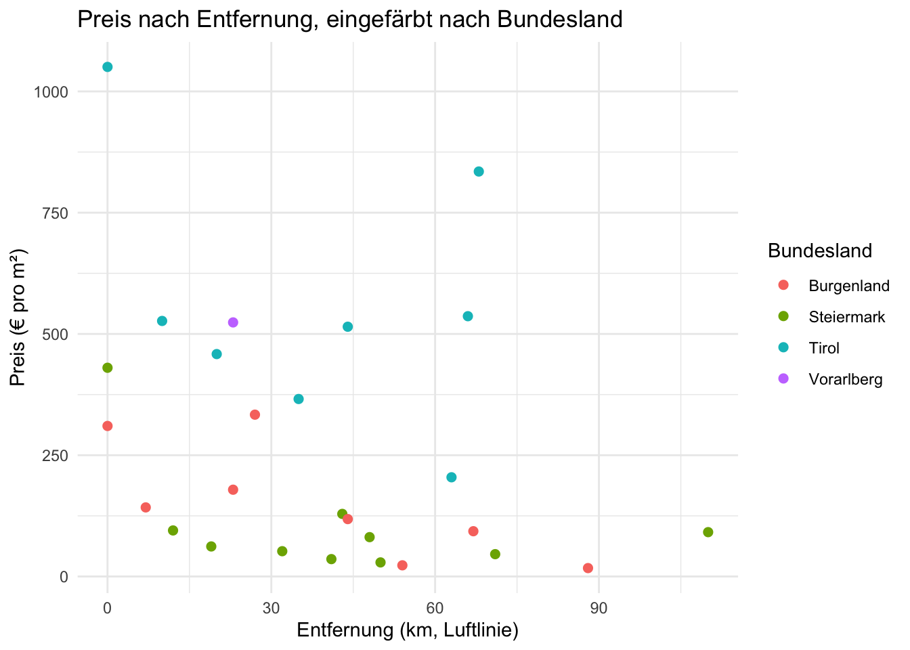
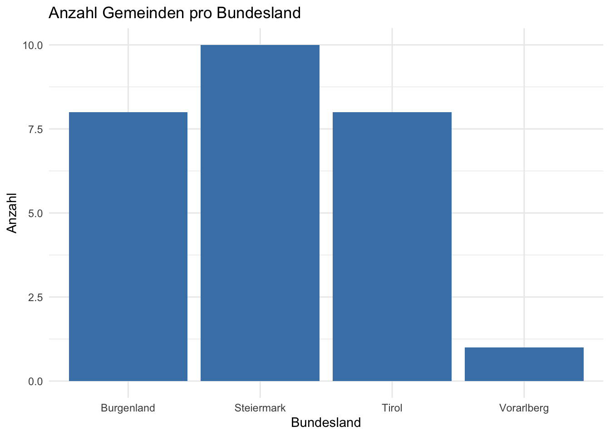
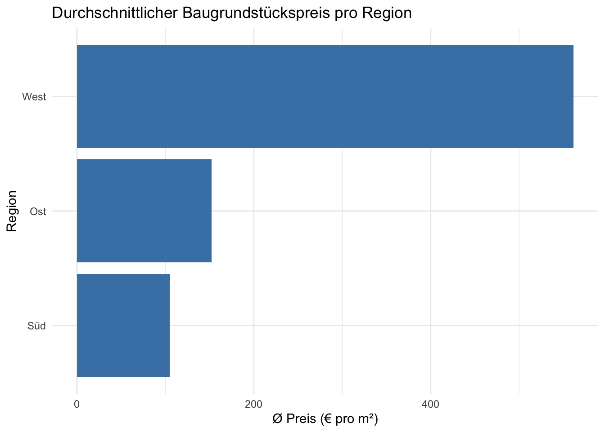
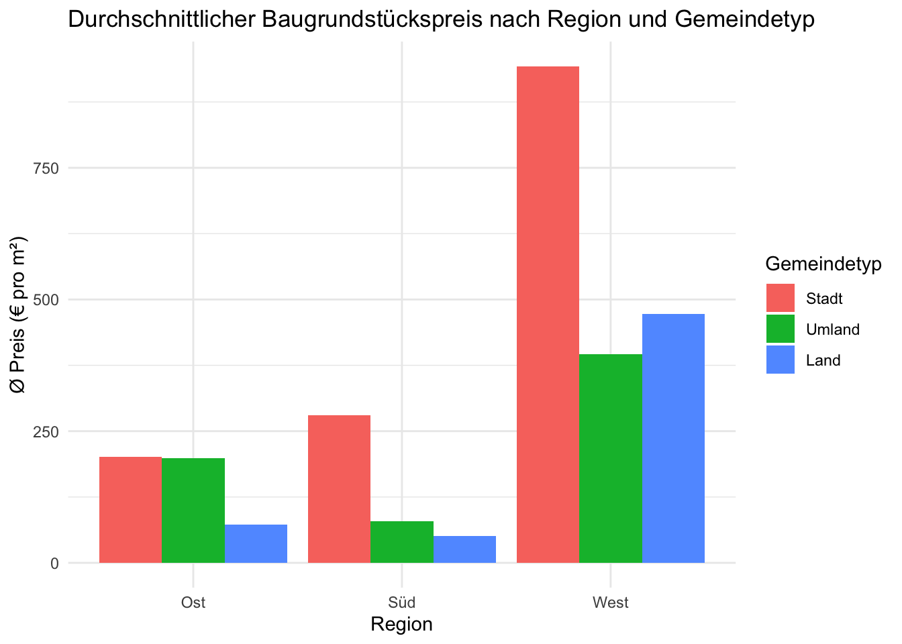
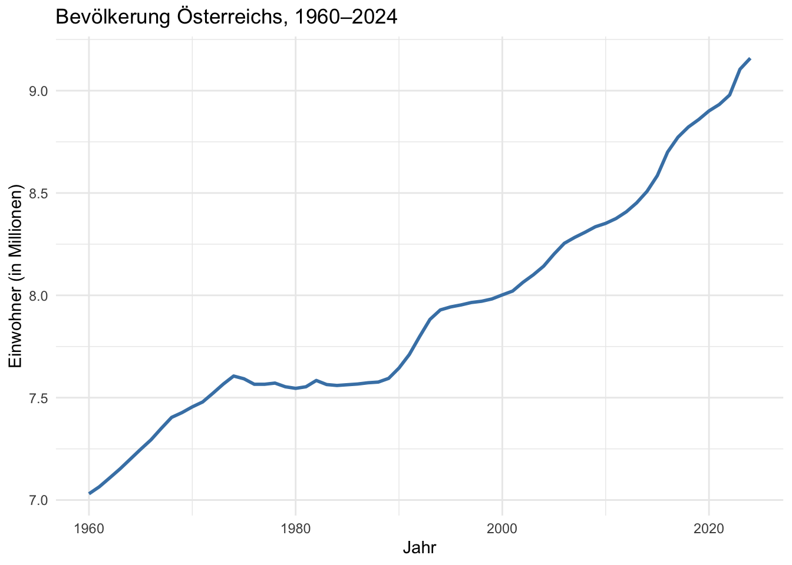
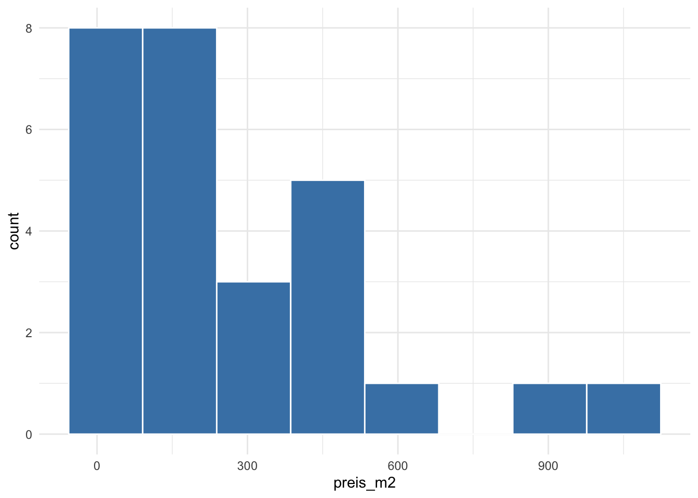

library(dplyr) # Daten bearbeiten
library(tidyr) # Tabellen umformen
library(ggplot2) # GrafikenEinheit 4: Daten auswerten & visualisieren
In dieser Einheit lernst du:
- Datenbearbeitung mit
dplyr— filtern, sortieren, neue Spalten berechnen, gruppieren, verbinden, umformen - Visualisierung mit
ggplot2— Grafiken schichtweise aufbauen
Falls noch nicht geschehen, einmalig in der Console installieren: install.packages(c("dplyr", "tidyr", "ggplot2")).
Wir arbeiten mit den Gemeinde-Daten aus Einheit 3 (bei Ischgl fehlt der Preis — darauf kommen wir mehrmals zurück):
gemeinden <- read.csv("data/raw/gemeinden.csv")
bundeslaender <- read.csv("data/raw/bundeslaender.csv")Teil 1: Datenbearbeitung mit dplyr
dplyr bündelt typische Arbeitsschritte in gut lesbare Funktionen („Verben”). Jedes Verb bekommt einen Data Frame und gibt einen neuen zurück.
filter() — Zeilen auswählen
filter(gemeinden, preis_m2 > 400) gkz gemeinde bundesland typ einwohner flaeche_km2 entfernung_km preis_m2
1 70501 Alpbach Tirol Land 2510 58.4 44 514.9
2 60101 Graz Steiermark Stadt 306971 127.6 0 430.3
3 70101 Innsbruck Tirol Stadt 132820 104.9 0 1050.5
4 70513 Kufstein Tirol Stadt 20118 39.4 68 834.9
5 70526 Söll Tirol Land 3784 46.0 66 536.6
6 70933 Terfens Tirol Umland 2326 15.2 20 458.5
7 70361 Unterperfuss Tirol Umland 248 2.2 10 526.8
8 80422 Viktorsberg Vorarlberg Umland 441 12.5 23 523.8filter(gemeinden, typ %in% c("Stadt", "Umland"), entfernung_km <= 20) gkz gemeinde bundesland typ einwohner flaeche_km2 entfernung_km preis_m2
1 10101 Eisenstadt Burgenland Stadt 16396 42.9 0 310.3
2 60101 Graz Steiermark Stadt 306971 127.6 0 430.3
3 70101 Innsbruck Tirol Stadt 132820 104.9 0 1050.5
4 60626 Kumberg Steiermark Umland 3924 29.3 12 94.9
5 61612 Ligist Steiermark Umland 3177 34.6 19 61.9
6 10321 Stotzing Burgenland Umland 839 12.9 7 142.4
7 70933 Terfens Tirol Umland 2326 15.2 20 458.5
8 70361 Unterperfuss Tirol Umland 248 2.2 10 526.8Zeilen, bei denen die Bedingung NA ergibt (hier: Ischgl), fallen weg.
select() — Spalten auswählen
Ein Minus schließt Spalten aus:
select(gemeinden, gemeinde, bundesland, einwohner) gemeinde bundesland einwohner
1 Aigen im Ennstal Steiermark 2756
2 Alpbach Tirol 2510
3 Eisenstadt Burgenland 16396
4 Finkenberg Tirol 1413
5 Forchach Tirol 260
6 Graz Steiermark 306971
7 Innsbruck Tirol 132820
8 Ischgl Tirol 1624
9 Kitzeck im Sausal Steiermark 1137
10 Kufstein Tirol 20118
11 Kumberg Steiermark 3924
12 Leoben Steiermark 24455
13 Ligist Steiermark 3177
14 Moschendorf Burgenland 357
15 Mühlen Steiermark 847
16 Oberwart Burgenland 8130
17 Pama Burgenland 1271
18 Podersdorf am See Burgenland 2129
19 Rohr bei Hartberg Steiermark 1382
20 Söll Tirol 3784
21 Stotzing Burgenland 839
22 Terfens Tirol 2326
23 Traboch Steiermark 1398
24 Unterkohlstätten Burgenland 963
25 Unterperfuss Tirol 248
26 Viktorsberg Vorarlberg 441
27 Weiden am See Burgenland 2560
28 Wies Steiermark 4264select(gemeinden, -c(gkz, entfernung_km)) gemeinde bundesland typ einwohner flaeche_km2 preis_m2
1 Aigen im Ennstal Steiermark Land 2756 86.4 91.4
2 Alpbach Tirol Land 2510 58.4 514.9
3 Eisenstadt Burgenland Stadt 16396 42.9 310.3
4 Finkenberg Tirol Land 1413 171.5 365.9
5 Forchach Tirol Umland 260 14.3 204.5
6 Graz Steiermark Stadt 306971 127.6 430.3
7 Innsbruck Tirol Stadt 132820 104.9 1050.5
8 Ischgl Tirol Land 1624 103.3 NA
9 Kitzeck im Sausal Steiermark Land 1137 16.3 52.1
10 Kufstein Tirol Stadt 20118 39.4 834.9
11 Kumberg Steiermark Umland 3924 29.3 94.9
12 Leoben Steiermark Stadt 24455 107.8 129.0
13 Ligist Steiermark Umland 3177 34.6 61.9
14 Moschendorf Burgenland Land 357 13.2 17.3
15 Mühlen Steiermark Land 847 50.8 46.0
16 Oberwart Burgenland Stadt 8130 36.5 93.3
17 Pama Burgenland Umland 1271 26.4 118.3
18 Podersdorf am See Burgenland Land 2129 41.7 178.9
19 Rohr bei Hartberg Steiermark Land 1382 27.7 29.0
20 Söll Tirol Land 3784 46.0 536.6
21 Stotzing Burgenland Umland 839 12.9 142.4
22 Terfens Tirol Umland 2326 15.2 458.5
23 Traboch Steiermark Umland 1398 12.5 81.1
24 Unterkohlstätten Burgenland Land 963 29.1 23.0
25 Unterperfuss Tirol Umland 248 2.2 526.8
26 Viktorsberg Vorarlberg Umland 441 12.5 523.8
27 Weiden am See Burgenland Umland 2560 32.5 333.6
28 Wies Steiermark Land 4264 76.4 35.8arrange() — sortieren
desc() dreht die Reihenfolge um:
arrange(gemeinden, desc(preis_m2)) gkz gemeinde bundesland typ einwohner flaeche_km2 entfernung_km preis_m2
1 70101 Innsbruck Tirol Stadt 132820 104.9 0 1050.5
2 70513 Kufstein Tirol Stadt 20118 39.4 68 834.9
3 70526 Söll Tirol Land 3784 46.0 66 536.6
4 70361 Unterperfuss Tirol Umland 248 2.2 10 526.8
5 80422 Viktorsberg Vorarlberg Umland 441 12.5 23 523.8
6 70501 Alpbach Tirol Land 2510 58.4 44 514.9
7 70933 Terfens Tirol Umland 2326 15.2 20 458.5
8 60101 Graz Steiermark Stadt 306971 127.6 0 430.3
9 70908 Finkenberg Tirol Land 1413 171.5 35 365.9
10 10722 Weiden am See Burgenland Umland 2560 32.5 27 333.6
11 10101 Eisenstadt Burgenland Stadt 16396 42.9 0 310.3
12 70810 Forchach Tirol Umland 260 14.3 63 204.5
13 10718 Podersdorf am See Burgenland Land 2129 41.7 23 178.9
14 10321 Stotzing Burgenland Umland 839 12.9 7 142.4
15 61108 Leoben Steiermark Stadt 24455 107.8 43 129.0
16 10715 Pama Burgenland Umland 1271 26.4 44 118.3
17 60626 Kumberg Steiermark Umland 3924 29.3 12 94.9
18 10917 Oberwart Burgenland Stadt 8130 36.5 67 93.3
19 61203 Aigen im Ennstal Steiermark Land 2756 86.4 110 91.4
20 61116 Traboch Steiermark Umland 1398 12.5 48 81.1
21 61612 Ligist Steiermark Umland 3177 34.6 19 61.9
22 61019 Kitzeck im Sausal Steiermark Land 1137 16.3 32 52.1
23 61410 Mühlen Steiermark Land 847 50.8 71 46.0
24 60351 Wies Steiermark Land 4264 76.4 41 35.8
25 62276 Rohr bei Hartberg Steiermark Land 1382 27.7 50 29.0
26 10924 Unterkohlstätten Burgenland Land 963 29.1 54 23.0
27 10428 Moschendorf Burgenland Land 357 13.2 88 17.3
28 70608 Ischgl Tirol Land 1624 103.3 88 NADer Pipe-Operator: %>% und |>
Mehrere Schritte ohne Pipe heißt: verschachteln (von innen nach außen lesen) oder viele Zwischenergebnisse speichern:
arrange(filter(gemeinden, bundesland == "Tirol"), desc(preis_m2)) gkz gemeinde bundesland typ einwohner flaeche_km2 entfernung_km preis_m2
1 70101 Innsbruck Tirol Stadt 132820 104.9 0 1050.5
2 70513 Kufstein Tirol Stadt 20118 39.4 68 834.9
3 70526 Söll Tirol Land 3784 46.0 66 536.6
4 70361 Unterperfuss Tirol Umland 248 2.2 10 526.8
5 70501 Alpbach Tirol Land 2510 58.4 44 514.9
6 70933 Terfens Tirol Umland 2326 15.2 20 458.5
7 70908 Finkenberg Tirol Land 1413 171.5 35 365.9
8 70810 Forchach Tirol Umland 260 14.3 63 204.5
9 70608 Ischgl Tirol Land 1624 103.3 88 NADie Pipe setzt das Ergebnis links als erstes Argument in die Funktion rechts ein. Man liest sie als „und dann”: Nimm gemeinden, und dann filtere nach Tirol, und dann sortiere nach dem Preis. Der Data Frame steht deshalb nicht mehr in der Klammer:
gemeinden %>%
filter(bundesland == "Tirol") %>%
arrange(desc(preis_m2)) gkz gemeinde bundesland typ einwohner flaeche_km2 entfernung_km preis_m2
1 70101 Innsbruck Tirol Stadt 132820 104.9 0 1050.5
2 70513 Kufstein Tirol Stadt 20118 39.4 68 834.9
3 70526 Söll Tirol Land 3784 46.0 66 536.6
4 70361 Unterperfuss Tirol Umland 248 2.2 10 526.8
5 70501 Alpbach Tirol Land 2510 58.4 44 514.9
6 70933 Terfens Tirol Umland 2326 15.2 20 458.5
7 70908 Finkenberg Tirol Land 1413 171.5 35 365.9
8 70810 Forchach Tirol Umland 260 14.3 63 204.5
9 70608 Ischgl Tirol Land 1624 103.3 88 NAEs gibt zwei Schreibweisen, die sich in diesem Kurs gleich verhalten: %>% (kommt mit dplyr, steht in den meisten Büchern) und |> (seit R 4.1 eingebaut). Du solltest beide lesen können. Tastenkürzel: Strg/Cmd + Shift + M.
mutate() — neue Spalten berechnen
mutate() berechnet eine neue Spalte für jede Zeile — wie gemeinden$dichte <- ... in Basis-R:
gemeinden <- gemeinden %>%
mutate(dichte = round(einwohner / flaeche_km2))case_when() — Werte nach Bedingungen einteilen
Jede Zeile in case_when() hat die Form bedingung ~ ergebnis; die erste zutreffende gewinnt, TRUE ~ fängt alles Übrige auf:
gemeinden <- gemeinden %>%
mutate(preisniveau = case_when(
is.na(preis_m2) ~ NA, # fehlende Werte zuerst abfangen
preis_m2 > 400 ~ "hoch",
preis_m2 > 100 ~ "mittel", # alles über 400 ist schon "hoch"
TRUE ~ "niedrig" # alle übrigen Zeilen
))
filter(gemeinden, gemeinde == "Ischgl") gkz gemeinde bundesland typ einwohner flaeche_km2 entfernung_km preis_m2 dichte preisniveau
1 70608 Ischgl Tirol Land 1624 103.3 88 NA 16 <NA>Ohne die erste Zeile würde Ischgl als "niedrig" eingestuft — die Vergleiche ergeben NA, und dann greift TRUE ~.
count(), group_by() + summarise() — Kennzahlen pro Gruppe
count() zählt, wie oft jeder Wert vorkommt — das dplyr-Gegenstück zu table():
gemeinden %>% count(bundesland) bundesland n
1 Burgenland 8
2 Steiermark 10
3 Tirol 9
4 Vorarlberg 1group_by() + summarise() berechnet eine Kennzahl je Gruppe:
gemeinden %>%
group_by(bundesland) %>%
summarise(
anzahl = n(),
preis_mean = mean(preis_m2),
einwohner_max = max(einwohner)
)# A tibble: 4 × 4
bundesland anzahl preis_mean einwohner_max
<chr> <int> <dbl> <int>
1 Burgenland 8 152. 16396
2 Steiermark 10 105. 306971
3 Tirol 9 NA 132820
4 Vorarlberg 1 524. 441Bei Tirol steht NA, weil der Preis von Ischgl fehlt — na.rm = TRUE lässt ihn aus. Nach mehreren Spalten gruppiert ergibt sich eine Zeile pro Kombination:
gemeinden %>%
group_by(bundesland, typ) %>%
summarise(anzahl = n(), preis_mean = mean(preis_m2, na.rm = TRUE))# A tibble: 10 × 4
# Groups: bundesland [4]
bundesland typ anzahl preis_mean
<chr> <chr> <int> <dbl>
1 Burgenland Land 3 73.1
2 Burgenland Stadt 2 202.
3 Burgenland Umland 3 198.
4 Steiermark Land 5 50.9
5 Steiermark Stadt 2 280.
6 Steiermark Umland 3 79.3
7 Tirol Land 4 472.
8 Tirol Stadt 2 943.
9 Tirol Umland 3 397.
10 Vorarlberg Umland 1 524. Die Meldung summarise() has grouped output by 'bundesland' ist nur ein Hinweis, kein Fehler.
HinweisWas ist ein Tibble?
Viele Funktionen aus dplyr, tidyr und readxl geben ein Tibble zurück — einen Data Frame mit anderer Anzeige: Oben stehen Größe und Datentypen (<chr>, <dbl>), gezeigt werden nur die ersten zehn Zeilen (alles: View()). Ein Unterschied beim Arbeiten: tabelle[, "spalte"] liefert bei einem Tibble eine Tabelle, tabelle$spalte immer einen Vektor. as.data.frame() wandelt um.
Datensätze verbinden: Joins
bundeslaender enthält zu jedem Bundesland die Region (Ost-, Süd- oder Westösterreich). Ein Join hängt sie über die gemeinsame Spalte bundesland an gemeinden an.
Die Tabellen passen absichtlich nicht perfekt zusammen: Vorarlberg (Gemeinde Viktorsberg) fehlt in bundeslaender, Salzburg hat keine Gemeinden im Datensatz.

nrow(left_join(gemeinden, bundeslaender, by = "bundesland")) # 28 — alle Gemeinden, Viktorsberg mit Region NA[1] 28nrow(inner_join(gemeinden, bundeslaender, by = "bundesland")) # 27 — Viktorsberg fällt weg[1] 27nrow(full_join(gemeinden, bundeslaender, by = "bundesland")) # 29 — dazu Salzburg ohne Gemeinde[1] 29right_join() behält alle Bundesländer. Meist will man keine Zeilen verlieren, deshalb ist left_join() der Standard:
gemeinden_join <- gemeinden %>%
left_join(bundeslaender, by = "bundesland")
gemeinden_join %>% filter(is.na(region)) gkz gemeinde bundesland typ einwohner flaeche_km2 entfernung_km preis_m2 dichte preisniveau region
1 80422 Viktorsberg Vorarlberg Umland 441 12.5 23 523.8 35 hoch <NA>Über mehrere Spalten: by = c("spalte1", "spalte2"). In Basis-R heißt der Join merge().
Breite und lange Tabellen: pivot_longer() und pivot_wider()

- breit: eine Spalte pro Jahr. Gut zum Lesen, aber das Jahr steckt im Spaltennamen — R kann nicht danach filtern oder gruppieren.
- lang: eine Zeile pro Region und Jahr. Das Jahr ist eine eigene Spalte, mit der
filter(),group_by()undggplot2arbeiten können.
Faustregel: Stehen in den Spaltennamen Werte (Jahre, Monate, Kategorien), ist die Tabelle breit.
Beispiel: ein Export aus der ARDECO-Datenbank mit der Bevölkerung europäischer Staaten und ihrer NUTS-3-Regionen — die Quelle auch für Übungsaufgabe 1. Jedes Jahr ist eine Spalte; weil Spaltennamen nicht mit einer Ziffer beginnen dürfen, hat read.csv() ein X davorgesetzt:
bev_breit <- read.csv("data/raw/ardeco_bevoelkerung.csv")
dim(bev_breit)[1] 1374 75bev_breit[1:3, c("TERRITORY_ID", "NAME_HTML", "X1960", "X1961", "X1962")] TERRITORY_ID NAME_HTML X1960 X1961 X1962
1 AL Albania 1583800 1633800 1685800
2 AT Austria 7030385 7064693 7107904
3 BE Belgium 9128824 9178154 9189741pivot_longer() macht aus vielen Spalten zwei: eine für die bisherigen Spaltennamen (names_to, im Bild orange) und eine für die Werte (values_to, blau). cols wählt die Spalten aus — wie bei select():
bev_lang <- bev_breit %>%
pivot_longer(cols = starts_with("X"), names_to = "jahr", values_to = "einwohner",
names_prefix = "X") %>% # das X vor der Jahreszahl entfernen
mutate(jahr = as.integer(jahr)) %>% # "1960" (Text) -> 1960 (Zahl)
select(TERRITORY_ID, NAME_HTML, jahr, einwohner)
dim(bev_lang)[1] 93432 4head(bev_lang, 3)# A tibble: 3 × 4
TERRITORY_ID NAME_HTML jahr einwohner
<chr> <chr> <int> <dbl>
1 AL Albania 1960 1583800
2 AL Albania 1961 1633800
3 AL Albania 1962 1685800pivot_wider() geht den umgekehrten Weg: Die Werte von names_from werden zu Spaltennamen, values_from füllt die Zellen — praktisch, um Jahre nebeneinander zu vergleichen:
bev_lang %>%
filter(TERRITORY_ID %in% c("AT", "AT130"), jahr %in% c(1960, 1990, 2020)) %>%
pivot_wider(names_from = jahr, values_from = einwohner, names_prefix = "einwohner_")# A tibble: 2 × 5
TERRITORY_ID NAME_HTML einwohner_1960 einwohner_1990 einwohner_2020
<chr> <chr> <dbl> <dbl> <dbl>
1 AT Austria 7030385 7644818 8901064
2 AT130 Wien 1618135 1492636 1911191In älteren Skripten heißt pivot_longer() noch gather().
Übung
- Zeige für die Tiroler Gemeinden
gemeinde,typund die Bevölkerungsdichte (gerundet), sortiert von der dichtesten zur dünnsten. - Verbinde
gemeindenmitbundeslaenderund berechne proregiondie Anzahl Gemeinden und den durchschnittlichen Preis. Warum gibt es eine GruppeNA? - Stelle aus
bev_langdie Einwohner von 1990 und 2024 für Österreich (AT), Deutschland (DE) und die Schweiz (CH) nebeneinander. Um wie viel Prozent ist die Bevölkerung jeweils gewachsen?
# dein CodeTeil 2: Visualisierung mit ggplot2
Die Daten vorbereiten
Ohne Preis kann ggplot keinen Punkt zeichnen und warnt bei jeder Grafik. Deshalb entfernen wir Ischgl einmal vorab und geben typ eine sinnvolle Reihenfolge (Faktor, Einheit 2) — sonst wird alphabetisch sortiert:
gemeinden_plot <- gemeinden_join %>%
filter(!is.na(preis_m2)) %>%
mutate(typ = factor(typ, levels = c("Stadt", "Umland", "Land")))Der Grundaufbau
ggplot2 baut Grafiken schichtweise mit + auf:
ggplot(daten, aes(x = ..., y = ...)) + # Daten + welche Spalte auf welche Achse
geom_...() # welche Form: Punkte, Balken, Linien …Streudiagramm: geom_point()
ggplot(gemeinden_plot, aes(x = entfernung_km, y = preis_m2)) +
geom_point(color = "steelblue", size = 2) +
labs(title = "Baugrundstückspreis nach Entfernung zur Landeshauptstadt",
x = "Entfernung (km, Luftlinie)", y = "Preis (€ pro m²)") +
theme_minimal()
Die Punkte streuen stark — ein klarer Zusammenhang ist noch nicht zu erkennen.
Nach Gruppe einfärben
Eine Spalte in aes() auf color legen — Farben und Legende kommen automatisch:
ggplot(gemeinden_plot, aes(x = entfernung_km, y = preis_m2, color = bundesland)) +
geom_point(size = 2) +
labs(title = "Preis nach Entfernung, eingefärbt nach Bundesland",
x = "Entfernung (km, Luftlinie)", y = "Preis (€ pro m²)", color = "Bundesland") +
theme_minimal()
Jetzt wird das Muster sichtbar: In Tirol und Vorarlberg ist Bauland viel teurer als im Burgenland und in der Steiermark; dort sinkt der Preis mit der Entfernung.
color = "steelblue" außerhalb von aes() setzt eine feste Farbe; color = bundesland innerhalb von aes() färbt nach den Werten einer Spalte.
Balkendiagramme: geom_bar() und geom_col()
geom_bar() braucht nur x und zählt selbst die Zeilen pro Kategorie (hier ohne Ischgl):
ggplot(gemeinden_plot, aes(x = bundesland)) +
geom_bar(fill = "steelblue") +
labs(title = "Anzahl Gemeinden pro Bundesland", x = "Bundesland", y = "Anzahl") +
theme_minimal()
Steht die Balkenhöhe schon in einer Spalte, nimmt man geom_col() (in älteren Skripten: geom_bar(stat = "identity")). dplyr und ggplot2 greifen ineinander: erst die Kennzahl berechnen, dann direkt weiterreichen. reorder(region, preis_mean) sortiert die Balken nach dem Wert, coord_flip() dreht die Grafik:
gemeinden_plot %>%
filter(!is.na(region)) %>%
group_by(region) %>%
summarise(preis_mean = mean(preis_m2)) %>%
ggplot(aes(x = reorder(region, preis_mean), y = preis_mean)) +
geom_col(fill = "steelblue") +
coord_flip() +
labs(title = "Durchschnittlicher Baugrundstückspreis pro Region",
x = "Region", y = "Ø Preis (€ pro m²)") +
theme_minimal()
Kommt eine zweite Gruppe auf fill, werden die Balken gestapelt; position = "dodge" stellt sie nebeneinander:
gemeinden_plot %>%
filter(!is.na(region)) %>%
group_by(region, typ) %>%
summarise(preis_mean = mean(preis_m2)) %>%
ggplot(aes(x = region, y = preis_mean, fill = typ)) +
geom_col(position = "dodge") +
labs(title = "Durchschnittlicher Baugrundstückspreis nach Region und Gemeindetyp",
x = "Region", y = "Ø Preis (€ pro m²)", fill = "Gemeindetyp") +
theme_minimal()
Zeitverläufe: geom_line()
geom_line() braucht das lange Format — das Jahr als eigene Spalte, wie in bev_lang. Die Werte nach 2024 sind Prognosen:
bev_lang %>%
filter(TERRITORY_ID == "AT", jahr <= 2024) %>%
ggplot(aes(x = jahr, y = einwohner / 1000000)) +
geom_line(color = "steelblue", linewidth = 1) +
labs(title = "Bevölkerung Österreichs, 1960–2024",
x = "Jahr", y = "Einwohner (in Millionen)") +
theme_minimal()
Mehrere Linien: eine Spalte auf color legen, z. B. aes(..., color = NAME_HTML).
Verteilungen: geom_boxplot() und geom_histogram()
ggplot(gemeinden_plot, aes(x = typ, y = preis_m2)) +
geom_boxplot(fill = "lightgrey") +
labs(title = "Baugrundstückspreis je Gemeindetyp", x = "Gemeindetyp", y = "Preis (€ pro m²)") +
theme_minimal()
ggplot(gemeinden_plot, aes(x = preis_m2)) +
geom_histogram(bins = 8, fill = "steelblue", color = "white") +
theme_minimal()
Teilgrafiken: facet_wrap()
facet_wrap(~spalte) zeichnet eine Teilgrafik pro Ausprägung, alle mit denselben Achsen (eigene Achsen: scales = "free"):
ggplot(gemeinden_plot, aes(x = entfernung_km, y = preis_m2)) +
geom_point(color = "darkred") +
facet_wrap(~bundesland) +
labs(title = "Preis nach Entfernung, aufgeteilt nach Bundesland",
x = "Entfernung (km, Luftlinie)", y = "Preis (€ pro m²)") +
theme_bw()
Grafik speichern: ggsave()
ggsave() speichert die zuletzt erzeugte Grafik:
ggsave("output/preis_entfernung.png", width = 8, height = 5)Weitere Möglichkeiten entdecken
- ggplot2-Referenz — alle
geom_...(), Skalen und Themes mit Beispielen - ggplot2-Cheatsheet — die wichtigsten Bausteine auf einen Blick
- R Graph Gallery — Grafiktypen mit fertigem Code
Übung
Jede Grafik bekommt einen Titel und beschriftete Achsen.
- Zeichne den durchschnittlichen Preis pro Bundesland als Balkendiagramm, sortiert vom niedrigsten zum höchsten Wert.
- Zeichne aus
bev_langdie Bevölkerung der Regionen Graz (AT221) und Östliche Obersteiermark (AT223) von 1960 bis 2024 als zwei Linien in einer Grafik. Was zeigt der Vergleich?
# dein Code